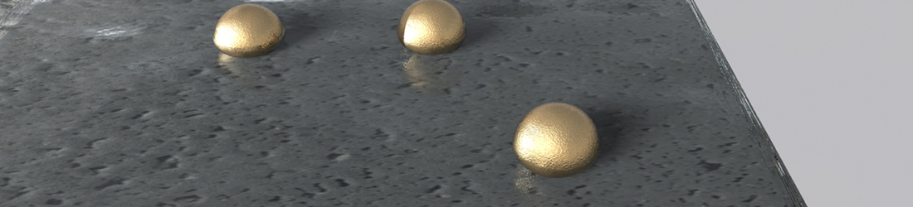
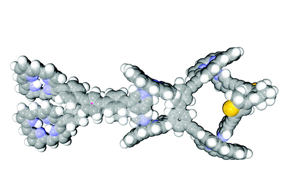
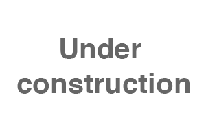

光を照射すると溶液中で連動してねじれ運動を起こす「超分子機械」の開発や、天然の糖質（でんぷんやセルロース）由来のバイオプラスチックの開発に取り組んできました。
超分子機械
タンパク質は、分子の動きを精密に制御することで洗練された機能を発揮する生体分子機械です。それに触発され、有機合成的に設計された複数のパーツを分子間相互作用によって連動させ、光異性化の機械的な動きを遠隔に伝える合成分子機械を構築しました（H. Kai et al., JACS 2008）。
高分子材料
ポリ乳酸を強靭化するナノフィラーや、セルロース樹脂にカルダノールを化学修飾することで熱可塑性を付与したバイオプラスチックの開発を行いました。